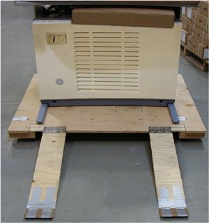

Operating Documentation
Direction 5134894-800, Rev# 9
GOC4 Upgrade Installation & Service Information
Operating Documentation |
If the CT system is to be stored before installation, store in a temperature and humidity controlled warehouse. Protect from weather, dirt and dust. Storage temperature should not exceed 40º to +80º F (-4º to +27º C). Maintain relative humidity (non-condensing) between 20% and 60%.
Do not store a LightSpeed CT system in a non-controlled environment for extended periods of time. Meeting this requirement prevents rust and corrosion from forming on bearing surfaces due to condensation.
Equipment kept in a moving van while awaiting delivery is considered to be in storage. All temperature and humidity restrictions (including “Extreme Temperature Storage” defined below) apply to equipment in such situations.
Extreme Temperature Storage:
Extreme storage temperatures are defined as below 32º F or above 110º F, without humidity control. CT systems must not be exposed to extreme temperatures while in storage.
When transporting the CT system, ensure that the system is not exposed to temperatures or humidity outside the following specifications.
Temperature: 0º to +120º F (-18º to +49º C)
Humidity: 20% to 80%
| Component Freezing occurs if CT system is exposed to temperatures below 0º F (-18º C) for a period longer than two days. | |
Avoid all sub-zero and extreme heat van delivery lay-overs. Avoid deliveries where van temperatures reach below zero degrees or above 130 degrees.
Special handling measures should be taken to prevent equipment damage, for all extreme temperature deliveries.
Use special care to avoid delivery routes that may cause excessive shock or vibration. Choose routes that will prevent dropping or tipping system components.
Deliver the CT console to the scan suite on the protective shipping skid, to prevent damage.
Allow a minimum of 12 hours for the CT system to adjust to ambient room temperature, prior to unpacking of equipment, including all boxes and accessories.
Allow an additional 12 or more hours to mechanically install system with no power applied.
If moisture is present on any component after the mechanical installation is complete, allow additional time for all moisture to evaporate before system power up.
Allow the detector temperature to stabilize with power ON, until normal operating temperature is reached, as displayed on the home page GUI.
Although not installed, the keyboard table is shipped with the console.
Console shipping dimensions are 40" (1016 mm) deep, 53" (1346 mm) wide and 41" (1041 mm) high. Refer to Illustration 1.
| Do not lift the console by the monitor table top to remove from the shipping skid. | |
Illustration 1: Console ready to be unloaded from shipping skid.
